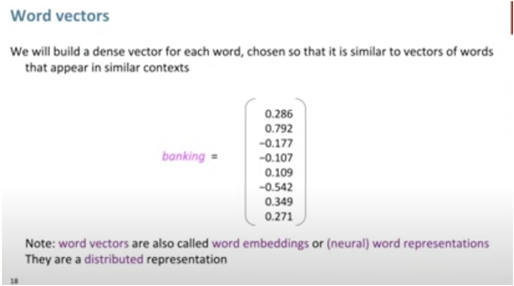
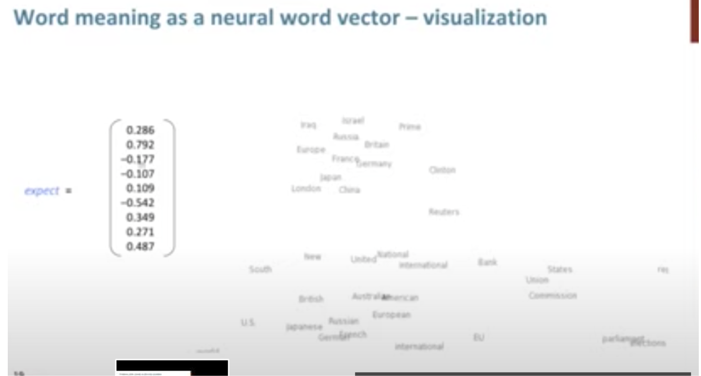
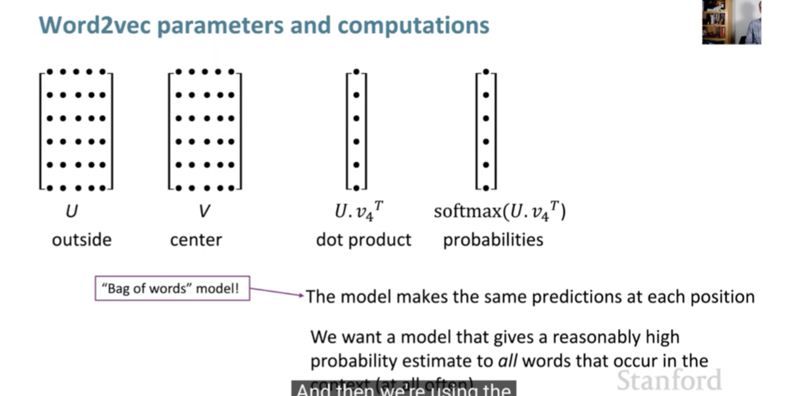

Natural Language Processing • Word Vectors/Embeddings
- Overview
- How do we represent the meaning of a word?
- Overview
- Word Embeddings
- Related: WordNet
- Term Frequency-Inverse Document Frequency (TF-IDF)
- BM25
- Word2Vec
- Motivation behind Word2Vec: The Need for Context-based Semantic Understanding
- Core Idea
- Word2Vec Architectures
- Training and Optimization
- Embedding and Semantic Relationships
- Distinction from Traditional Models
- Semantic Nature of Word2Vec Embeddings
- Further Learning Resources
- Key Limitations of Word2Vec
- GloVe
- fastText
- Example: TF-IDF, BM25, Word2Vec, and GloVe Embeddings
- Summary: Types of Embeddings
- Citation
Overview
- We can think of information existing in a continuous stream or in discrete chunks. Large Language Models (LLMs) fall under the category of continuous knowledge representation.
- LLM embeddings are dense, continuous real-valued vectors existing in a high-dimensional space (e.g., 768 dimensional in case of BERT). Think of them as coordinates on a map: just as longitude and latitude can pinpoint a location on a two-dimensional map, embeddings guide us to rough positions in a multi-dimensional ‘semantic space’ made up of the connections between the words on the internet. Since the embedding vectors are continuous, they allow for an infinite range of values within a given interval, making the embeddings’ coordinates ‘fuzzy’.
- An LLM embedding for ‘Jennifer Aniston’ will be a several-thousand-dimensional continuous vector that leads to a location in a several-billion-parameter ‘word-space’. If we add the ‘TV series’ embedding to this vector then I will be pulled towards the position of the ‘Friends’ vector. Magic! But this magic comes with a price: you can never quite trust the answers. Hallucination and creativity are two sides of the same coin.
- In the domain of Natural Language Processing (NLP), representing the meaning of words is of paramount importance. This article aims to discuss the evolving techniques of capturing word semantics and their underlying mechanisms, with a specific focus on Word2Vec, a popular algorithm for learning word vectors.
- Key takeaway
- Word meaning can be represented not perfectly, but decently well by a vector of real numbers.
How do we represent the meaning of a word?

- Let’s start with what is meaning. We can look up the Webster Dictionary and here’s what it says:
- The idea that is represented by a word, phrase, etc.
- The idea that a person wants to express by using word, signs, etc.
- The idea that is expressed in a work of writing, art, etc.
Overview
“You shall know a word by the company it keeps” - J.R. Firth
- Natural language processing (NLP) is a crucial part of artificial intelligence (AI), modeling how people share information.
- In recent years, deep learning approaches have obtained very high performance on many NLP tasks.
- Natural language processing (NLP) is the ability of a computer program to understand human language as it is spoken and written – referred to as natural language. It is a component of artificial intelligence (AI).
- NLP has existed for more than 50 years and has roots in the field of linguistics.
Word Embeddings
-
Word embeddings, also known as word vectors, provide a dense, continuous, and compact representation of words, encapsulating their semantic and syntactic attributes. They are essentially real-valued vectors, and the proximity of these vectors in a multidimensional space is indicative of the linguistic relationships between words.
-
This concept is rooted in the Distributional Hypothesis, which posits that words appearing in similar contexts are likely to bear similar meanings. Consequently, in a high-dimensional vector space, vectors representing semantically related words (e.g., ‘apple’ and ‘orange’, both fruits) are positioned closer to each other compared to those representing semantically distant words (e.g., ‘apple’ and ‘dog’).
-
Word embeddings are constructed by forming dense vectors for each word, chosen in such a way that they resemble vectors of contextually similar words. This process effectively embeds words in a high-dimensional vector space, with each dimension contributing to the representation of a word’s meaning. For example, the concept of ‘banking’ is distributed across all dimensions of its vector, with its entire semantic essence embedded within this multidimensional space.


-
The term ‘embedding’ in this context refers to the transformation of discrete words into continuous vectors, achieved through word embedding algorithms. These algorithms are designed to convert words into vectors that encapsulate a significant portion of their semantic content. A classic example of the effectiveness of these embeddings is the vector arithmetic that yields meaningful analogies, such as
'king' - 'man' + 'woman' ≈ 'queen'. -
Word embeddings are typically pre-trained on large, unlabeled text corpora. This training often involves optimizing auxiliary objectives, like predicting a word based on its contextual neighbors, as demonstrated in Word2Vec by Mikolov et al. (2013). Through this process, the resultant word vectors encapsulate both syntactic and semantic properties of words.
-
These embeddings have shown remarkable efficiency in capturing contextual similarities, analogies, and, owing to their reduced dimensionality, facilitate rapid and effective computation in various natural language processing tasks. Similarity between word vectors can be quantitatively assessed using measures such as cosine similarity.
-
In deep learning models, word embeddings are frequently employed as the initial layer of data processing. This foundational role of embeddings will be further elaborated upon in our discussion of advanced models like BERT.
-
In summary, word embeddings not only efficiently encapsulate the semantic and syntactic nuances of language but also play a pivotal role in enhancing the computational efficiency of numerous natural language processing tasks.
Related: WordNet
- One of the initial attempts to digitally encapsulate a word’s meaning was through the development of WordNet. WordNet functioned as an extensive thesaurus, encompassing a compilation of synonym sets and hypernyms, the latter representing a type of hierarchical relationship among words.
- Despite its innovative approach, WordNet encountered several limitations:
- Inefficacy in capturing the full scope of word meanings.
- Inadequacy in reflecting the subtle nuances associated with words.
- An inability to incorporate evolving meanings of words over time.
- Challenges in maintaining its currency and relevance in an ever-changing linguistic landscape.
- Moreover, WordNet employed the principles of distributional semantics, which posits that a word’s meaning is largely determined by the words that frequently appear in close proximity to it.
- Subsequently, the field of Natural Language Processing (NLP) witnessed a paradigm shift with the advent of word embeddings. These embeddings marked a significant departure from the constraints of traditional lexical databases like WordNet. Unlike its predecessors, word embeddings provided a more dynamic and contextually sensitive approach to understanding language. By representing words as vectors in a continuous vector space, these embeddings could capture a broader array of linguistic relationships, including semantic similarity and syntactic patterns.
- Today, word embeddings continue to be a cornerstone technology in NLP, powering a wide array of applications and tasks. Their ability to efficiently encode word meanings into a dense vector space has not only enhanced the performance of various NLP tasks but also has laid the groundwork for more advanced language processing and understanding technologies.
Term Frequency-Inverse Document Frequency (TF-IDF)
- Term Frequency-Inverse Document Frequency (TF-IDF) is a statistical measure used to evaluate the importance of a word to a document in a collection or corpus. It is often used in information retrieval and text mining to rank the relevance of documents to a specific query. The TF-IDF value increases proportionally with the number of times a word appears in the document, but this is offset by the frequency of the word in the corpus, which helps to control for the fact that some words are generally more common than others.
1. Term Frequency (TF):
- Term Frequency measures how frequently a term occurs in a document. Since every document is different in length, it is possible that a term would appear much more times in long documents than shorter ones. Thus, the term frequency is often divided by the document length (the total number of terms in the document) as a way of normalization:
2. Inverse Document Frequency (IDF):
- Inverse Document Frequency measures how important a term is. While computing TF, all terms are considered equally important. However, certain terms, like “is”, “of”, and “that”, may appear a lot of times but have little importance. Thus, we need to weigh down the frequent terms while scaling up the rare ones, by computing the following:
- TF-IDF Example:
- Consider a document collection with two documents:
- Doc 1: “The sky is blue.”
- Doc 2: “The sun is bright.”
- Let’s calculate the TF-IDF for the word “blue” in Doc 1.
- TF for “blue” in Doc 1 = 1 / 4 (the word “blue” appears once in 4 words).
- Assume our document collection contains 10 documents, and the word “blue” appears in 2 of these. Then, IDF for “blue” = log(10/2) = log(5).
- Finally, the TF-IDF score for “blue” in Doc 1 = TF * IDF = (1/4) * log(5).
- The TF-IDF score for “blue” in Doc 1 is thus a measure of its importance in that document, within the context of the given document collection. This score would be different in a different document or a different collection, reflecting the term’s varying importance. TF-IDF is a fundamental technique in text processing, often used for tasks like document classification, search engine ranking, and information retrieval.
- Consider a document collection with two documents:
Limitations of TF-IDF
-
TF-IDF is a widely used technique in information retrieval and text processing, but it comes with several limitations:
-
Lack of Context and Word Order: TF-IDF treats each word in a document independently and does not consider the context in which a word appears. This means it cannot capture the meaning of words based on their surrounding words or the overall semantic structure of the text. The word order is also ignored, which can be crucial in understanding the meaning of a sentence.
-
Does Not Account for Polysemy: Words with multiple meanings (polysemy) are treated the same regardless of their context. For example, the word “bank” would have the same representation in “river bank” and “savings bank”, even though it has different meanings in these contexts.
-
Lack of Semantic Understanding: TF-IDF relies purely on the statistical occurrence of words in documents, which means it lacks any understanding of the semantics of the words. It cannot capture synonyms or related terms unless they appear in similar documents within the corpus.
-
Bias Towards Rare Terms: While the IDF component of TF-IDF aims to balance the frequency of terms, it can sometimes overly emphasize rare terms. This might lead to overvaluing words that appear infrequently but are not necessarily more relevant or important in the context of the document.
-
Vocabulary Limitation: The TF-IDF model is limited to the vocabulary of the corpus it was trained on. It cannot handle new words that were not in the training corpus, making it less effective for dynamic content or languages that evolve rapidly.
-
Normalization Issues: The normalization process in TF-IDF (e.g., dividing by the total number of words in a document) may not always be effective in balancing document lengths and word frequencies, potentially leading to skewed results.
-
Requires a Large and Representative Corpus: For the IDF part of TF-IDF to be effective, it needs a large and representative corpus. If the corpus is not representative of the language or the domain of interest, the IDF scores may not accurately reflect the importance of the words.
-
No Distinction Between Different Types of Documents: TF-IDF treats all documents in the corpus equally, without considering the type or quality of the documents. This means that all sources are considered equally authoritative, which may not be the case.
-
Poor Performance with Short Texts: In very short documents, like tweets or SMS messages, the TF-IDF scores can be less meaningful because of the limited word occurrence and context.
-
-
In conclusion, while TF-IDF is a powerful tool for certain applications, these limitations make it less suitable for tasks that require deep understanding of language, such as semantic search, word sense disambiguation, or processing of very short or dynamically changing texts. This has led to the development and adoption of more advanced techniques like word embeddings and neural network-based models in natural language processing.
BM25
- BM25 is a ranking function used in information retrieval systems, particularly in search engines, to rank documents based on their relevance to a given search query. It’s a part of the family of probabilistic information retrieval models and is an extension of the TF-IDF (Term Frequency-Inverse Document Frequency) approach, though it introduces several improvements and modifications.
Key Components of BM25
-
Term Frequency (TF): BM25 modifies the term frequency component of TF-IDF to address the issue of term saturation. In TF-IDF, the more frequently a term appears in a document, the more it is considered relevant. However, this can lead to a problem where beyond a certain point, additional occurrences of a term don’t really indicate more relevance. BM25 addresses this by using a logarithmic scale for term frequency, which allows for a point of diminishing returns, preventing a term’s frequency from having an unbounded impact on the document’s relevance.
-
Inverse Document Frequency (IDF): Like TF-IDF, BM25 includes an IDF component, which helps to weight a term’s importance based on how rare or common it is across all documents. The idea is that terms that appear in many documents are less informative than those that appear in fewer documents.
-
Document Length Normalization: BM25 introduces a sophisticated way of handling document length. Unlike TF-IDF, which may unfairly penalize longer documents, BM25 normalizes for length in a more balanced manner, reducing the impact of document length on the calculation of relevance.
-
Tunable Parameters: BM25 includes parameters like
k1andb, which can be adjusted to optimize performance for specific datasets and needs.k1controls how quickly an increase in term frequency leads to term saturation, andbcontrols the degree of length normalization.
Example
-
Imagine you have a collection of documents and a user searches for “solar energy advantages”.
- Document A is 300 words long and mentions “solar energy” 4 times and “advantages” 3 times.
- Document B is 1000 words long and mentions “solar energy” 10 times and “advantages” 1 time.
- Using BM25:
- Term Frequency: The term “solar energy” appears more times in Document B, but due to term saturation, the additional occurrences don’t contribute as much to its relevance score as the first few mentions.
- Inverse Document Frequency: If “solar energy” and “advantages” are relatively rare in the overall document set, their appearances in these documents increase the relevance score more significantly.
- Document Length Normalization: Although Document B is longer, BM25’s length normalization ensures that it’s not unduly penalized simply for having more words. The relevance of the terms is balanced against the length of the document.
- So, despite Document B having more mentions of “solar energy”, BM25 will calculate the relevance of both documents in a way that balances term frequency, term rarity, and document length, potentially ranking them differently based on how these factors interplay. The final relevance scores would then determine their ranking in the search results for the query “solar energy advantages”.
Differences compared to TF-IDF
- BM25 is a ranking function used by search engines to estimate the relevance of documents to a given search query. It’s part of the probabilistic information retrieval model and is considered an evolution of the TF-IDF (Term Frequency-Inverse Document Frequency) model. Both are used to rank documents based on their relevance to a query, but they differ in how they calculate this relevance.
BM25
- Term Frequency Component: Like TF-IDF, BM25 considers the frequency of the query term in a document. However, it adds a saturation point to prevent a term’s frequency from disproportionately influencing the document’s relevance.
- Length Normalization: BM25 adjusts for the length of the document, penalizing longer documents less harshly than TF-IDF.
- Tuning Parameters: It includes two parameters,
k1andb, which control term saturation and length normalization, respectively. These can be tuned to suit specific types of documents or queries.
TF-IDF
- Term Frequency: TF-IDF measures the frequency of a term in a document. The more times the term appears, the higher the score.
- Inverse Document Frequency: This component reduces the weight of terms that appear in many documents across the corpus, assuming they are less informative.
- Simpler Model: TF-IDF is generally simpler than BM25 and doesn’t involve parameters like
k1orb.
Example
-
Imagine a search query “chocolate cake recipe” and two documents:
- Document A: 100 words, “chocolate cake recipe” appears 10 times.
- Document B: 1000 words, “chocolate cake recipe” appears 15 times.
Using TF-IDF:
- The term frequency for “chocolate cake recipe” would be higher in Document A.
- Document B, being longer, might get a lower relevance score due to less frequency of the term.
Using BM25:
- The term frequency component would reach a saturation point, meaning after a certain frequency, additional occurrences of “chocolate cake recipe” contribute less to the score.
- Length normalization in BM25 would not penalize Document B as heavily as TF-IDF, considering its length.
- The tuning parameters
k1andbcould be adjusted to optimize the balance between term frequency and document length.
-
In essence, while both models aim to determine the relevance of documents to a query, BM25 offers a more nuanced and adjustable approach, especially beneficial in handling longer documents and ensuring that term frequency doesn’t disproportionately affect relevance.
Limitations of BM25
-
BM25, while a powerful and widely-used ranking function in information retrieval, has several limitations:
-
Parameter Sensitivity: BM25 includes parameters like
k1andb, which need to be fine-tuned for optimal performance. This tuning process can be complex and is highly dependent on the specific nature of the document collection and queries. Inappropriate parameter settings can lead to suboptimal results. -
Non-Handling of Semantic Similarities: BM25 primarily relies on exact keyword matching. It does not account for the semantic relationships between words. For instance, it would not recognize “automobile” and “car” as related terms unless explicitly programmed to do so. This limitation makes BM25 less effective in understanding the context or capturing the nuances of language.
-
Ineffectiveness with Short Queries or Documents: BM25’s effectiveness can decrease with very short queries or documents, as there are fewer words to analyze, making it harder to distinguish relevant documents from irrelevant ones.
-
Length Normalization Challenges: While BM25’s length normalization aims to prevent longer documents from being unfairly penalized, it can sometimes lead to the opposite problem, where shorter documents are unduly favored. The balance is not always perfect, and the effectiveness of the normalization can vary based on the dataset.
-
Query Term Independence: BM25 assumes independence between query terms. It doesn’t consider the possibility that the presence of certain terms together might change the relevance of a document compared to the presence of those terms individually.
-
Difficulty with Rare Terms: Like TF-IDF, BM25 can struggle with very rare terms. If a term appears in very few documents, its IDF (Inverse Document Frequency) component can become disproportionately high, skewing results.
-
Performance in Specialized Domains: In specialized domains with unique linguistic features (like legal, medical, or technical fields), BM25 might require significant customization to perform well. This is because standard parameter settings and term-weighting mechanisms may not align well with the unique characteristics of these specialized texts.
-
Ignoring Document Quality: BM25 focuses on term frequency and document length but doesn’t consider other aspects that might indicate document quality, such as authoritativeness, readability, or the freshness of information.
-
Vulnerability to Keyword Stuffing: Like many other keyword-based algorithms, BM25 can be susceptible to keyword stuffing, where documents are artificially loaded with keywords to boost relevance.
-
Incompatibility with Complex Queries: BM25 is less effective for complex queries, such as those involving natural language questions or multi-faceted information needs. It is designed for keyword-based queries and may not perform well with queries that require understanding of context or intent.
-
-
Understanding these limitations is crucial when implementing BM25 in a search engine or information retrieval system, as it helps in identifying cases where BM25 might need to be supplemented with other techniques or algorithms for better performance.
Word2Vec
- Proposed in Efficient Estimation of Word Representations in Vector Space by Mikolov et al. (2013), the Word2Vec algorithm represents a significant advancement in the field of natural language processing (NLP). It utilizes a vector space model to encapsulate words in a manner that captures both semantic and syntactic relationships. This method enables the algorithm to discern similarities and differences between words, as well as to identify analogous relationships, such as the parallel between “Stockholm” and “Sweden” and “Cairo” and “Egypt.”
- Word2Vec’s methodology of representing words as vectors in a semantic and syntactic space has profoundly impacted the field of NLP, offering a robust framework for capturing the intricacies of language and its usage.
Motivation behind Word2Vec: The Need for Context-based Semantic Understanding
-
TF-IDF and BM25 are methods used in information retrieval to rank documents based on their relevance to a query. While they provide useful measures for text analysis, they do not offer context-based “semantic” embeddings (in the same way that Word2Vec or BERT embeddings do). Here’s why:
-
TF-IDF: This method calculates a weight for each word in a document, which increases with the number of times the word appears in the document but decreases based on the frequency of the word across all documents. TF-IDF is good at identifying important words in a document but doesn’t capture the meaning of the words or their relationships with each other. It’s more about word importance than word meaning.
-
BM25: An extension of TF-IDF, BM25 is a ranking function used by search engines to estimate the relevance of documents to a given search query. While it improves upon TF-IDF by incorporating probabilistic understanding of term occurrence and handling of term saturation, it still fundamentally operates on term frequency and inverse document frequency. Like TF-IDF, BM25 doesn’t inherently capture semantic relationships between words.
-
- In contrast, semantic embeddings (like those from Word2Vec, BERT, etc.) are designed to capture the meanings of words and their relationships to each other. These embeddings represent words as vectors in a way that words with similar meanings are located close to each other in the vector space, enabling the capture of semantic relationships and nuances in language.
- Therefore, while TF-IDF and BM25 are valuable tools for information retrieval and determining document relevance, they do not provide semantic embeddings of words or phrases. They are more focused on word occurrence and frequency rather than on capturing the underlying meanings and relationships of words.
Core Idea
- Word2Vec employs a shallow neural network, trained on a large textual corpus, to predict the context surrounding a given word. The essence of Word2Vec lies in its ability to convert words into high-dimensional vectors. This representation allows the algorithm to capture the meaning, semantic similarity, and relationships with surrounding text. A notable feature of Word2Vec is its capacity to perform arithmetic operations with these vectors to reveal linguistic patterns, such as the famous analogy ‘king - man + woman = queen’.

Word2Vec Architectures
-
Word2Vec offers two distinct architectures for training:
-
Continuous Bag-of-Words (CBOW): This model predicts a target word based on its context words. The input is a summation of the word vectors of the surrounding context words, with the output being the current word. This approach is depicted in the following image:

-
Skip-gram: Conversely, the Skip-gram model predicts the surrounding context words from a given target word. The input is the target word, and the output is a softmax classification over the entire vocabulary to predict the context words.
-
Training and Optimization
- The training of Word2Vec involves representing every word in a fixed vocabulary by a vector and then optimizing these vectors to predict surrounding words accurately. This is achieved through stochastic gradient descent, minimizing a loss function that indicates the discrepancy between predicted and actual context words. The algorithm uses a sliding window approach to maximize the probability of context words given a center word, as illustrated in the accompanying diagram:
Embedding and Semantic Relationships
- Through the training process, Word2Vec places words with similar meanings in proximity within the high-dimensional vector space. For example, ‘bread’ and ‘croissant’ would have closely aligned vectors, just as ‘woman’, ‘king’, and ‘man’ would demonstrate meaningful relationships through vector arithmetic:

Distinction from Traditional Models
- A key differentiation between Word2Vec and traditional count-based language models is its reliance on embeddings. Deep learning-based NLP models, including Word2Vec, represent words, phrases, and even sentences using these embeddings, which encode much richer contextual and semantic information.
Semantic Nature of Word2Vec Embeddings
- Word2Vec embeddings are considered semantic in the sense that they capture semantic relationships between words based on their usage in the text. The key idea behind Word2Vec is that words used in similar contexts tend to have similar meanings. This is often summarized by the phrase “a word is characterized by the company it keeps.”
- When Word2Vec is trained on a large corpus of text, it learns vector representations (embeddings) for words such that words with similar meanings have similar embeddings. This is achieved through either of two model architectures: Continuous Bag-of-Words (CBOW) or Skip-Gram.
- CBOW Model: This model predicts a target word based on context words. For example, in the sentence “The cat sat on the ___”, the model tries to predict the word ‘mat’ based on the context provided by the other words.
- Skip-Gram Model: This model works the other way around, where it uses a target word to predict context words. For instance, given the word ‘cat’, it tries to predict ‘the’, ‘sat’, ‘on’, and ‘mat’.
-
These embeddings capture various semantic relationships, such as:
- Similarity: Words with similar meanings have embeddings that are close in the vector space.
- Analogy: Relationships like “man is to woman as king is to queen” can often be captured through vector arithmetic (e.g.,
vector('king') - vector('man') + vector('woman')is close tovector('queen')). -
Clustering: Words with similar meanings tend to cluster together in the vector space.
- However, it’s important to note that while Word2Vec captures many semantic relationships, it also has limitations. For example, it doesn’t capture polysemy well (the same word having different meanings in different contexts) and sometimes the relationships it learns are more syntactic than semantic. More advanced models like BERT and GPT have since been developed to address some of these limitations.
Further Learning Resources
- For those interested in a deeper exploration of Word2Vec, the following resources provide comprehensive insights into the foundational aspects of Word2Vec:
Word2Vec, a pivotal development in natural language processing, has been instrumental in advancing our understanding of semantic relationships between words through vector embeddings. However, despite its breakthrough status, Word2Vec is not without limitations, many of which have been highlighted and addressed in subsequent developments within the field.
Key Limitations of Word2Vec
- While Word2Vec’s method of word embedding results in a context-agnostic, single representation for each word, this becomes a significant limitation when dealing with polysemous words, i.e., words that possess multiple meanings based on their context. More advanced models such as BERT and ELMo have since been developed to provide context-dependent embeddings, where the representation of a word can dynamically vary based on its usage within a sentence. Here are the specifics:
- Static, Non-Contextualized Nature:
- Single Vector Per Word: Word2Vec assigns a unique vector to each word, which remains static regardless of the word’s varying context in different sentences. This results in a representation that cannot dynamically adapt to different usages of the same word.
- Combination of Contexts: In cases where a word like “bank” appears in multiple contexts (“river bank” vs. “financial bank”), Word2Vec does not generate distinct embeddings for each scenario. Instead, it creates a singular, averaged representation that amalgamates all the contexts in which the word appears, leading to a generalized semantic representation.
- Lack of Disambiguation: The model’s inability to differentiate between the multiple meanings of polysemous words means that words like “bank” are represented by a single vector, irrespective of the specific meaning in a given context.
- Context Window Limitation: Word2Vec employs a fixed-size context window, capturing only local co-occurrence patterns without a deeper understanding of the word’s role in the broader sentence or paragraph.
- Training Process and Computational Intensity:
- Adjustments During Training: Throughout the training process, the word vectors are continually adjusted, not to switch between meanings but to refine the word’s placement in the semantic space based on an aggregate of its various uses.
- Resource Demands: Training Word2Vec, particularly for large vocabularies, requires significant computational resources and time. Techniques like negative sampling were introduced to alleviate some of these demands, but computational intensity remains a challenge.
- Handling of Special Cases:
- Phrase Representation: Word2Vec struggles with representing phrases or idioms where the meaning is not simply an aggregation of the meanings of individual words.
- Out-of-Vocabulary Words: The model faces challenges with unknown or out-of-vocabulary (OOV) words. This issue is better addressed in models that treat words as compositions of characters, such as character embeddings, which are especially beneficial for languages with non-segmented script.
- Global Vector Representation Limitations:
- Uniform Representation Across Contexts: Word2Vec, like other traditional methods, generates a global vector representation for each word, which does not account for the various meanings a word can have in different contexts. For example, the different senses of “bank” in diverse sentences are not captured distinctively.
- Resulting Embedding Compromises:
- The resulting vector for words with distinct meanings is a compromise that reflects its diverse uses, leading to less precise representations for tasks requiring accurate contextual understanding.
- These limitations of Word2Vec have spurred advancements in the field, leading to the development of more sophisticated language models that address issues of context sensitivity, polysemy, computational efficiency, and handling of OOV words. This progression towards more robust and context-aware word representations underscores the ongoing evolution and potential of natural language processing.
GloVe
Overview
- Proposed in GloVe: Global Vectors for Word Representation by Pennington et al. (2014), Global Vectors for Word Representation (GloVe) embeddings are a type of word representation used in NLP. They are designed to capture not just the local context of words but also their global co-occurrence statistics in a corpus, thus providing a rich and nuanced word representation.
- By blending these approaches, GloVe captures a fuller picture of word meaning and usage, making it a valuable tool for various NLP tasks, such as sentiment analysis, machine translation, and information retrieval.
- Here’s a detailed explanation along with an example:
How GloVe Works
-
Co-Occurrence Matrix: GloVe starts by constructing a large matrix that represents the co-occurrence statistics of words in a given corpus. This matrix has dimensions of
[vocabulary size] x [vocabulary size], where each entry \((i, j)\) in the matrix represents how often word i occurs in the context of word j. -
Matrix Factorization: The algorithm then applies matrix factorization techniques to this co-occurrence matrix. The goal is to reduce the dimensions of each word into a lower-dimensional space (the embedding space), while preserving the co-occurrence information.
-
Word Vectors: The end result is that each word in the corpus is represented by a vector in this embedding space. Words with similar meanings or that often appear in similar contexts will have similar vectors.
-
Relationships and Analogies: These vectors capture complex patterns and relationships between words. For example, they can capture analogies like “man is to king as woman is to queen” by showing that the vector ‘king’ - ‘man’ + ‘woman’ is close to ‘queen’.
Example of GloVe in Action
- Imagine a simple corpus with the following sentences:
- “The cat sat on the mat.”
- “The dog sat on the log.”
- From this corpus, a co-occurrence matrix is constructed. For instance, ‘cat’ and ‘mat’ will have a higher co-occurrence score because they appear close to each other in the sentences. Similarly, ‘dog’ and ‘log’ will be close in the embedding space.
- After applying GloVe, each word (like ‘cat’, ‘dog’, ‘mat’, ‘log’) will be represented as a vector. The vector representation captures the essence of each word, not just based on the context within its immediate sentence, but also based on how these words co-occur in the entire corpus.
- In a large and diverse corpus, GloVe can capture complex relationships. For example, it might learn that ‘cat’ and ‘dog’ are both pets, and this will be reflected in how their vectors are positioned relative to each other and to other words like ‘pet’, ‘animal’, etc.
Significance of GloVe
- GloVe is powerful because it combines the benefits of two major approaches in word representation:
- Local Context Window Methods (like Word2Vec): These methods look at the local context, but might miss the broader context of word usage across the entire corpus.
- Global Matrix Factorization Methods: These methods, like Latent Semantic Analysis (LSA), consider global word co-occurrence but might miss the nuances of local word usage.
Differences compared to Word2Vec and fastText
- GloVe, fastText, and Word2Vec are all popular methods for generating word embeddings in natural language processing, but they differ significantly in their approaches and the type of information they capture.
- Each method has its unique strengths and applications, and the choice between them often depends on the specific requirements of the NLP task, such as the nature of the language being processed, the need to handle OOV words, and the computational resources available.
- Here’s a detailed comparison:
GloVe (Global Vectors for Word Representation)
- Approach: GloVe creates word embeddings by constructing a word-context co-occurrence matrix from a corpus. It then uses matrix factorization techniques on this matrix.
- Focus: GloVe captures global statistics of word co-occurrences across the entire corpus.
- Strengths: It’s effective at capturing both the global co-occurrence statistics and local context of words, leading to rich and nuanced word representations.
- Limitations: GloVe does not account for word order and is not as effective in capturing morphological nuances as fastText.
fastText
- Approach: Developed by Facebook’s AI Research lab, fastText extends the Word2Vec model by not just considering words as whole entities but also breaking them down into subword units (n-grams).
- Focus: fastText captures morphological information by considering these sub-word units, which is especially useful for languages with rich morphology.
- Strengths: It can generate embeddings for out-of-vocabulary (OOV) words based on their subword components, making it robust in handling uncommon or new words.
- Limitations: While powerful in handling morphology and OOV words, fastText might generate less meaningful embeddings for entire words since it emphasizes subword information.
Word2Vec
- Approach: Word2Vec, developed by Google, generates word embeddings using either of two models: Continuous Bag of Words (CBOW) or Skip-Gram. Both these models use local word context for learning representations.
- Focus: Word2Vec primarily focuses on the context in which a word appears, using the surrounding words as predictors for a target word (or vice versa).
- Strengths: It’s efficient and effective at capturing syntactic and semantic word relationships based on local context.
- Limitations: Word2Vec does not consider global co-occurrence statistics (unlike GloVe) and cannot handle OOV words or capture word morphology (unlike fastText).
Summary of Differences
- Global vs. Local Context: GloVe combines global word co-occurrence statistics with local context, whereas Word2Vec focuses only on local context.
- Morphological Richness: fastText excels in capturing subword information, making it superior for understanding morphologically rich languages and handling OOV words.
- Word Representations: GloVe provides more nuanced word representations by considering overall corpus statistics, while Word2Vec offers efficient, context-focused representations. fastText adds the dimension of subword information to the mix.
fastText
Overview
- Proposed in Enriching Word Vectors with Subword Information by Bojanowski et al. (2017), fastText is an advanced word representation and sentence classification library developed by Facebook’s AI Research (FAIR) lab. It’s primarily used for text classification and word embeddings in Natural Language Processing (NLP). fastText differs from traditional word embedding techniques through its unique approach to representing words, which is particularly beneficial for understanding morphologically complex languages or handling rare words.
- Specifically, fastText’s innovative approach of using subword information makes it a powerful tool for a variety of NLP tasks, especially in dealing with languages that have extensive word forms and in situations where the dataset contains many rare words. By learning embeddings that incorporate subword information, fastText provides a more nuanced and comprehensive understanding of language semantics compared to traditional word embedding methods.
- Here’s a detailed look at fastText with an example.
Core Features of fastText
-
Subword Information: Unlike traditional models that treat words as the smallest unit for training, fastText breaks down words into smaller units - subwords or character n-grams. For instance, for the word “fast”, with a chosen n-gram range of 3 to 6, some of the subwords would be “fas”, “fast”, “ast”, etc. This technique helps in capturing the morphology of words.
-
Handling of Rare Words: Due to its subword approach, fastText can effectively handle rare words or even words not seen during training. It generates embeddings for these words based on their subword units, allowing it to infer some meaning from these subcomponents.
-
Efficiency in Learning Word Representations: fastText is efficient in learning representations for words that appear infrequently in the corpus, which is a significant limitation in many other word embedding techniques.
-
Applicability to Various Languages: Its subword feature makes it particularly suitable for languages with rich word formations and complex morphology, like Turkish or Finnish.
-
Word Embedding and Text Classification: fastText can be used both for generating word embeddings and for text classification purposes, providing versatile applications in NLP tasks.
Example of fastText
- Consider the task of building a sentiment analysis model using word embeddings for an input sentence like “The movie was breathtakingly beautiful”. In traditional models like Word2Vec, each word is treated as a distinct unit, and if words like “breathtakingly” are rare in the training dataset, the model may not have a meaningful representation for them.
- With fastText, “breathtakingly” is broken down into subwords (e.g., “breat”, “eathtaking”, “htakingly”, etc.). fastText then learns vectors for these subwords. When computing the vector for “breathtakingly”, it aggregates the vectors of its subwords. This approach allows fastText to handle rare words more effectively, as it can utilize the information from common subwords to understand less common or even out-of-vocabulary words.
Differences compared to Word2Vec and GloVe
- fastText, Word2Vec, and GloVe are all popular methods for generating word embeddings in NLP. However, they differ significantly in their approach and underlying principles. The choice between these three models depends on the specific requirements of the NLP task, the characteristics of the language data, and the importance of accurately representing rare or morphologically complex words.
fastText
-
Subword Information: Developed by Facebook’s AI Research lab, fastText represents words as bags of character n-grams. This means that it breaks down words into smaller components (subwords) and learns representations for these subword units. This approach is particularly beneficial for handling morphologically rich languages and rare or out-of-vocabulary words.
-
Handling of Rare Words: fastText excels in handling rare words by inferring their meanings based on the subword components, offering a unique advantage in dealing with words not seen in training data.
-
Morphological Awareness: Ideal for languages with complex word formations, as it captures the nuances of word morphology through subwords.
GloVe
-
Global Matrix Factorization: GloVe, developed at Stanford, operates on word co-occurrence matrices. It focuses on constructing a global co-occurrence matrix of words from a corpus and then applying matrix factorization to derive word vectors.
-
Global Context: GloVe considers the entire corpus to ascertain word co-occurrence statistics, thereby capturing global word-word relationships.
-
Emphasis on Semantic Relationships: Known for capturing fine-grained semantic and syntactic regularities using vector arithmetic, GloVe is effective in revealing word associations based on the global context.
Word2Vec
-
Local Context Window: Developed by researchers at Google, Word2Vec employs a sliding window to capture local contextual information. It uses two main architectures: Continuous Bag of Words (CBOW), where context words are used to predict a target word, and Skip-Gram, where a word is used to predict its context words.
-
Word-Level Features: Word2Vec treats each word as a distinct entity without considering its internal structure (unlike fastText). It does not inherently capture subword information or morphological patterns.
-
Less Effective with Rare Words: Due to its word-level approach, Word2Vec is not as effective as fastText in dealing with rare or unseen words.
Key Differences
- Word Representation: fastText’s use of subword information, as opposed to the word-level approaches of GloVe and Word2Vec.
- Contextual Analysis: Word2Vec’s reliance on local context windows, contrasted with GloVe’s global co-occurrence matrix and fastText’s focus on internal word structure.
- Handling Rare Words: fastText’s superior ability to handle rare and unseen words thanks to its subword approach, a capability that GloVe and Word2Vec lack.
- Computational Complexity: GloVe and Word2Vec are generally more computationally efficient than fastText, especially for larger datasets, due to the latter’s more complex model involving subwords.
Example: TF-IDF, BM25, Word2Vec, and GloVe Embeddings
- Let’s expand on the example involving the word “cat” to illustrate how different embedding techniques (TF-IDF, BM25, Word2Vec, and GloVe) might represent it. We’ll consider the same documents as before:
- Document 1: “Cat sat on the mat.”
- Document 2: “Dog sat on the log.”
- Document 3: “Cat chased the dog.”
TF-IDF Embedding for “Cat”
- In TF-IDF, each word in a document is assigned a weight. This weight increases with the number of times the word appears in the document but is offset by the frequency of the word in the corpus.
- TF-IDF assigns a weight to a word in each document, reflecting its importance. The steps are:
- Calculate Term Frequency (TF): Count of “cat” in each document divided by the total number of words in that document.
- Calculate Inverse Document Frequency (IDF): Logarithm of the total number of documents divided by the number of documents containing “cat”.
- Multiply TF by IDF for each document.
- For instance, the TF-IDF weight for the word “cat” in Document 1 would be calculated as follows (simplified calculation):
- Term Frequency (TF) of “cat” in Document 1 = 1/5 (it appears once out of five words).
- Inverse Document Frequency (IDF) of “cat” = log(3/2) (it appears in 2 out of 3 documents, and we use the logarithm to dampen the effect).
- TF-IDF for “cat” in Document 1 = TF * IDF = (1/5) * log(3/2).
- Final TF-IDF Embedding for “Cat”:
[0.18, 0, 0.18](assuming normalized values for simplicity).
BM25 Embedding for “Cat”
- BM25 builds on top of TF-IDF and thus is more complex than TF-IDF. It considers term frequency, document frequency, document length, and two parameters: k1 and b. The final BM25 score for “cat” in each document might look like this (assuming certain values for \(k1\) and \(b\)):
- Final BM25 Score for “Cat”:
[2.5, 0, 2.3](hypothetical values).
Word2Vec Embedding for “Cat”
- Word2Vec provides a dense vector for each word. This vector is learned based on the context in which the word appears across the entire corpus, not just our three documents as in the example above.
- The model might represent the word “cat” as a vector, such as
[0.76, -0.21, 0.58, ...](assuming a 3-dimensional space for simplicity, but in reality, these vectors often have hundreds of dimensions).
GloVe Embedding for “Cat”
- GloVe, like Word2Vec, provides a dense vector for each word based on the aggregate global word-word co-occurrence statistics from a corpus.
- Hypothetical GloVe Embedding for “Cat”: In a 3-dimensional space,
[0.81, -0.45, 0.30]. As with Word2Vec, real-world GloVe embeddings would have a much higher dimensionality.
In these examples, it’s important to note that the TF-IDF and BM25 scores depend on the context of the specific documents, whereas the Word2Vec and GloVe embeddings are more general, trained on a larger corpus and representing the word’s meaning in a broader context. On the flip side, Word2Vec, GloVe, and fastText embeddings, lack contextualized representations (so they cannot represent polysemous works effectively), however, models such as ELMo and BERT overcome that limitation using contextualized embeddings. The specific values used here for TF-IDF, BM25, Word2Vec, and GloVe are illustrative and would vary based on the actual computation and dimensions used.
fastText Embedding for “Cat”
- fastText, like Word2Vec and GloVe, is a method for learning word embeddings, but it differs in its treatment of words. fastText treats each word as a bag of character n-grams, which allows it to better represent rare words or words not seen during training by breaking them down into smaller units.
- Hypothetical fastText Embedding for “Cat”: Assuming a 3-dimensional space,
[0.72, -0.25, 0.63]. Like the others, real fastText embeddings typically have a much higher dimensionality. - In this expanded example, the key addition of fastText is its ability to handle out-of-vocabulary words by breaking them down into n-grams, offering a more flexible representation, especially for languages with rich morphology or a lot of word forms. The specific values for fastText, like the others, are illustrative and depend
Summary: Types of Embeddings
- In the field of natural language processing (NLP), a variety of embedding techniques have been developed, each suited to specific applications and use cases. This article categorizes and delves into different types of word embeddings and their functionalities.
Bag-of-Words-based Embeddings
- These embeddings do not consider the order of words.
- Bag of Words (BoW): The simplest text representation method, BoW is a count-based approach that tallies the occurrences of each word in a document. However, it disregards any information about the order or structure of words, treating the text as a mere “bag” of words. It focuses only on the presence or absence of words, not their positioning within the document.
- TF-IDF (Term Frequency-Inverse Document Frequency): An advanced version of count vectors, TF-IDF considers the frequency of words in a document as well as their overall frequency in the corpus. Common words like “the” have lower TF-IDF scores, while unique or rare words have higher scores, reflecting their relative importance.
Predictive Word Embeddings
- These models predict words based on their context.
- Word2Vec: A neural network-based model that learns to represent words as vectors in a high-dimensional space. Words with similar meanings are represented by proximate vectors. Word2Vec facilitates capturing meanings, semantic similarities, and relationships within text, exemplified by analogies like
king - man + woman = queen.
- Word2Vec: A neural network-based model that learns to represent words as vectors in a high-dimensional space. Words with similar meanings are represented by proximate vectors. Word2Vec facilitates capturing meanings, semantic similarities, and relationships within text, exemplified by analogies like
Contextual and Sequential Data Embeddings
- Representing order and context of words, and suited for sequential data like text.
- Recurrent Neural Networks (RNNs): RNNs, and their advanced variants like LSTMs (Long Short-Term Memory), are adept at handling sequential data. They process inputs in a sequence, with each step’s output feeding into the next, capturing information from previous steps.
- Transformer: A model that revolutionized NLP with its encoder-decoder architecture, leveraging self-attention mechanisms. Transformers excel in learning long-range dependencies, allowing them to focus on specific parts of the input sequence and better understand sentence meanings.
Contextual Embeddings
-
These consider the order and context of words.
- ELMo (Embeddings from Language Models): Generates contextual embeddings from the internal states of a bi-directional LSTM.
- BERT (Bidirectional Encoder Representations from Transformers) Embeddings: Provides contextual embeddings based on the entire context of word usage.
Sentence/Document Embeddings
-
For broader textual units like sentences or documents.
- Doc2Vec: Extends Word2Vec to represent entire documents.
- Sentence-BERT: Adapts BERT for sentence-level embeddings.
- Universal Sentence Encoder: Encodes sentences into vectors for various tasks.
Positional Embeddings
-
Encodes the position of words within sequences.
- Absolute Positional Embeddings: Used in Transformers to encode the absolute position of words.
- Relative Positional Embeddings: Focuses on relative distances between words, beneficial in models like Transformer-XL and T5.
- Rotary Positional Embeddings/RoPE (Rotary Positional Encoding): Employs rotational operations to encode relative positions.
Relative Embeddings
-
Capture relative positions between word pairs in sequences.
- Relative Positional Embeddings: Encodes the relative positioning of words, like in the sentence “Alice threw the ball to Bob,” where “ball” has a relative position to other words. In Transformer models, the difference between positions \(i\) and \(j\) in the input sequence is used to retrieve corresponding embedding vectors, enhancing the model’s ability to generalize to new sequence lengths.
-
This categorization of embedding techniques underscores the diversity and evolution of approaches in representing linguistic elements in NLP, each with distinct advantages and suited for specific applications.
Citation
If you found our work useful, please cite it as:
@article{Chadha2021Distilled,
title = {Word Vectors},
author = {Jain, Vinija and Chadha, Aman},
journal = {Distilled AI},
year = {2021},
note = {\url{https://aman.ai}}
}